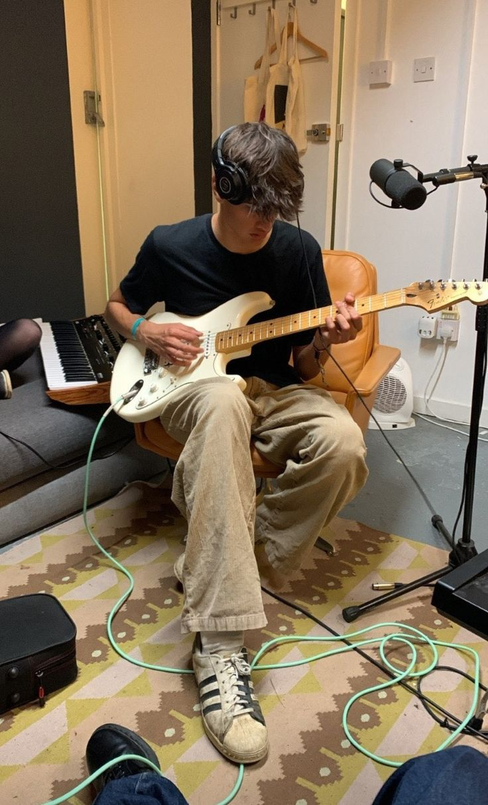

Quem toca guitarra
Sabe tocar músicas, acordes e alguns solos. Toca por prazer, no seu tempo, e já se diverte com o instrumento.
Virtuosismo é uma palavra muito falada, mas pouco explicada. Aqui eu conto, de um jeito simples, o que faz um guitarrista chegar a esse nível, seja você iniciante ou alguém que já toca há bastante tempo.
A ideia é compartilhar conhecimento: entender o que faz um guitarrista evoluir ajuda a perceber em que ponto você está e para onde quer ir.
Para entender o virtuosismo, vale começar pelos níveis de relação com o instrumento. Nenhum é melhor ou pior como pessoa: cada um mostra uma etapa diferente da jornada.
Sabe tocar músicas, acordes e alguns solos. Toca por prazer, no seu tempo, e já se diverte com o instrumento.
Estuda com constância, domina técnicas, entende o que está tocando e consegue acompanhar, solar e improvisar com segurança.
Vai além da técnica: tem controle total, usa tudo isso a serviço da música e tem um som que é só dele.
Mas o que coloca alguém no último degrau? Não existe uma regra única, mas estes cinco pontos aparecem sempre que falamos de virtuosismo.
Controle apurado de recursos como sweep picking, tapping, ligados, palhetada alternada e híbrida, bends e dinâmica.
Toca com clareza, ritmo firme e limpeza, evitando ruídos, notas sujas e falhas, mesmo em trechos difíceis.
Usa a técnica a serviço da música, seja na improvisação, na composição ou nos arranjos, e principalmente no feeling: o sentimento que coloca em cada nota.
Não é cópia de ninguém. Pega referências e transforma em algo diferente. Você ouve e sabe quem está tocando, mesmo sem olhar.
Transita bem por vários estilos. Isso não é obrigatório: quem domina um único estilo também pode ser virtuoso.
Ainda assim, quem circula bem por vários estilos costuma mostrar um virtuosismo ainda mais completo.
Alguns termos que apareceram acima podem ser novos para você. Aqui vai um resumo de cada um.
Tocar vários arpejos com um movimento contínuo da palheta.
Tocar notas batendo os dedos direto nas cordas, no braço da guitarra.
Notas feitas só pelos dedos da mão do braço, sem palhetar de novo.
Palhetar para baixo e para cima de forma alternada, nota a nota.
Combinar a palheta com os outros dedos da mesma mão para tocar as cordas.
Esticar a corda para fazer a nota subir de tom.
Variar a intensidade do som, do mais suave ao mais forte.
Falando em técnica, existe uma ideia que confunde muita gente: achar que virtuoso é só quem toca rápido. Quase todo virtuoso é rápido, mas a velocidade é consequência de técnica, controle e muita prática, e não o objetivo.
Tocar muitas notas sem clareza é só pressa. O que torna a velocidade impressionante é a precisão que vem junto com ela.
Uma frase simples, tocada com feeling, pode emocionar mais do que cem notas rápidas. A velocidade impressiona, mas é o sentimento que conecta.
Com tudo isso em mente, dá para ouvir os grandes nomes da guitarra com outros ouvidos. Cada detalhe que o ouvido percebe, como a limpeza de uma nota, um fraseado ou o jeito de variar a intensidade, conta um pouco de quem está tocando. Estas perguntas ajudam a prestar atenção.
Dá para reconhecer quem está tocando só pelo som, sem olhar?
As notas saem limpas, com ritmo firme, mesmo nos trechos difíceis?
Ele pega referências de outros e as transforma em algo diferente?
Mantém a qualidade quando muda de estilo ou de contexto?

Você não precisa ser virtuoso para tocar bem nem para ser feliz com a guitarra. Conhecer esses pontos serve para entender em que nível você está e escolher até onde quer evoluir.
Escolha duas notas musicais e descubra quantos semitons existem entre elas.
O resultado aparecerá aqui.
Quando o ouvido se desenvolve, a música se abre. Você passa a descobrir sentimentos novos, técnicas novas, harmonias e as relações entre elas, como perceber um acorde diminuto ou uma nota fora do campo harmônico, vinda de um empréstimo modal.
Aprender a ouvir melhor é perceber até onde a guitarra pode ir.